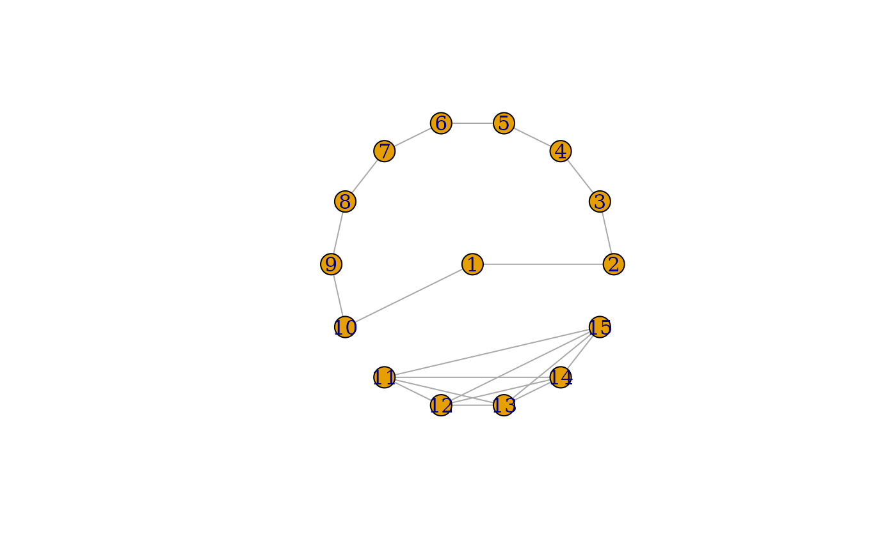

This is a generic function to apply a layout function to a graph.
Arguments
- graph
The input graph.
- layout
The layout specification. It must be a call to a layout specification function.
- ...
Further modifiers, see a complete list below. For the
print()methods, it is ignored.- x
The layout specification
Value
The return value of the layout function, usually a two column matrix. For 3D layouts a three column matrix.
Details
There are two ways to calculate graph layouts in igraph.
The first way is to call a layout function (they all have
prefix layout_() on a graph, to get the vertex coordinates.
The second way (new in igraph 0.8.0), has two steps, and it
is more flexible. First you call a layout specification
function (the one without the layout_() prefix, and
then layout_() (or add_layout_()) to
perform the layouting.
The second way is preferred, as it is more flexible. It allows
operations before and after the layouting. E.g. using the
component_wise() argument, the layout can be calculated
separately for each component, and then merged to get the
final results.
Modifiers
Modifiers modify how a layout calculation is performed.
Modifiers are applied in the order they are specified as arguments to
layout_().
There are two types of modifiers:
Pre-layout modifiers affect how the layout is calculated. Only one pre-layout modifier can be used at a time.
Post-layout modifiers transform the resulting coordinates. Multiple post-layout modifiers can be chained together.
Currently implemented modifiers:
component_wise()(pre-layout) calculates the layout separately for each component of the graph, and then merges them.normalize()(post-layout) scales the layout to a square.
Custom modifiers can be created using the layout_modifier() function.
A custom modifier must specify:
id: A unique identifier string for the modifiertype: Either"pre"for pre-layout or"post"for post-layoutargs: A list of arguments to pass to the apply functionapply: A function with signaturefunction(graph, layout, modifier_args)that performs the modification. For pre-layout modifiers,layoutis the layout specification. For post-layout modifiers,layoutis the coordinate matrix to transform.
See also
add_layout_() to add the layout to the
graph as an attribute.
Other graph layouts:
add_layout_(),
component_wise(),
layout_as_bipartite(),
layout_as_star(),
layout_as_tree(),
layout_in_circle(),
layout_nicely(),
layout_on_grid(),
layout_on_sphere(),
layout_randomly(),
layout_with_dh(),
layout_with_fr(),
layout_with_gem(),
layout_with_graphopt(),
layout_with_kk(),
layout_with_lgl(),
layout_with_mds(),
layout_with_sugiyama(),
merge_coords(),
norm_coords(),
normalize()
Examples
g <- make_ring(10) + make_full_graph(5)
coords <- layout_(g, as_star())
plot(g, layout = coords)

# Using modifiers
g <- make_ring(10) + make_ring(5)
coords <- layout_(g, in_circle(), component_wise(), normalize())
plot(g, layout = coords)
 # Creating a custom post-layout modifier
scale_by <- function(factor) {
layout_modifier(
id = "scale_by",
type = "post",
args = list(factor = factor),
apply = function(graph, layout, modifier_args) {
layout * modifier_args$factor
}
)
}
coords <- layout_(make_ring(10), in_circle(), scale_by(3))
plot(make_ring(10), layout = coords)
# Creating a custom post-layout modifier
scale_by <- function(factor) {
layout_modifier(
id = "scale_by",
type = "post",
args = list(factor = factor),
apply = function(graph, layout, modifier_args) {
layout * modifier_args$factor
}
)
}
coords <- layout_(make_ring(10), in_circle(), scale_by(3))
plot(make_ring(10), layout = coords)